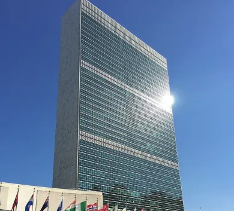

"Épicentre Mondial de la Paix : Le Siège des Nations Unies par Oscar Niemeyer"

Sièges des nations unies
Érigé sur les rives de l'East River à New York, le Siège des Nations Unies, conçu par le légendaire architecte brésilien Oscar Niemeyer, se dresse comme une icône de la diplomatie mondiale. Inauguré en 1952, cet édifice emblématique incarne la vision visionnaire de Niemeyer pour un monde uni, pacifique et coopératif.
Les formes géométriques uniques et les courbes gracieuses du Siège des Nations Unies confèrent à l'ensemble une élégance fonctionnelle. Le bâtiment symbolise l'unité des nations, avec son dôme caractéristique émergeant comme un symbole d'espoir et de coopération au-dessus de l'Assemblée générale.
L'intérieur, conçu pour favoriser le dialogue international, reflète la volonté de Niemeyer de créer un espace où les nations peuvent se réunir pour discuter, débattre et travailler en collaboration pour un monde meilleur.
Le Siège des Nations Unies par Oscar Niemeyer demeure un témoignage architectural puissant de l'engagement envers la paix mondiale. Au-delà de sa fonction, c'est un monument à la solidarité internationale, rappelant que, malgré nos différences, nous partageons tous une responsabilité commune envers la préservation de la paix et de la dignité humaine.